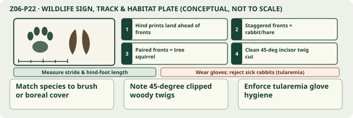

Z06-P22 · Hunting and fishing · New manuscript
Small Game Ecology: Cottontails, Snowshoe Hares and Squirrels
Recognize regional lagomorph and tree-squirrel ecology, seasonal coat shifts, and disease-hygiene boundaries.
When it applies · Minnesota brushy edges, boreal swamps, and oak-hickory hardwoods.
Equipment · Binoculars, field guide, current DNR small-game handbook.

Actions
- Distinguish eastern cottontails (brushy southern/central edges), snowshoe hares (northern boreal conifer swamps with seasonal white winter pelage), and gray/fox/red squirrels.[H16]
- Recognize classic bounding tracks where larger hind feet land ahead of smaller staggered front prints, alongside crisp 45-degree diagonal twig cuts made by sharp incisors.[H16]
- Verify current DNR small-game seasons and treat any sluggish, abnormal, or found-dead rabbit or rodent as a severe tularemia hazard never handled barehanded.[H02, H11]
Failure recognition · Confusing snowshoe hare with cottontail seasons or skinning wild rabbits without impervious gloves risks legal errors and tularemia infection.[H02, H11]
Verify · Habitat, track pattern, season legality, and strict glove/illness-exclusion hygiene are confirmed.[H02, H11, H16]
Stop or change course · Stop handling any sluggish or visibly ill small mammal immediately; do not harvest or touch found-dead carcasses.[H11]
Evidence and editorial notes
- H02 · Minnesota DNR · Minnesota Hunting and Trapping Regulations (Current web edition)
- Section: Hunting licenses, zones, seasons, and legal methods · Conditions: Minnesota big game, small game, and bird hunting
Support: Hunters must verify current license, permit-area, season, legal-hours, blaze-clothing, and method rules with the governing authority prior to afield activity.
Limitations: Private-land trespass law, municipal ordinances, and tribal jurisdiction apply separately; emergencies do not suspend wildlife law. · Conflicting evidence: None noted.
Editorial note: Establishes Z06 hunting authority gate. · Specialist reviewer: Minnesota DNR wildlife law reviewer
Primary source · checked 2026-11-25 - H11 · CDC · About Tularemia and Wild Rabbit / Game Handling Precautions (2024)
- Section: Tularemia precautions with wild rabbits, hares, and rodents · Conditions: Field handling of small game and carcasses
Support: Wear impervious gloves when handling wild rabbits/rodents, avoid sick or sluggish animals, and cook meat thoroughly; bacteria can enter through skin breaks or aerosols.
Limitations: Do not handle found-dead wildlife; seek medical evaluation promptly for fever or skin ulcers after exposure. · Conflicting evidence: None noted.
Editorial note: Critical Z06 small-game zoonosis safety gate. · Specialist reviewer: Infectious-disease specialist
Primary source · checked 2026-11-25 - H16 · Minnesota DNR · Mammals of Minnesota Species and Sign Reference (Current web edition)
- Section: Mammal ecology, seasonal movement, and sign interpretation · Conditions: Reading wildlife tracks, scat, browse, and trail patterns
Support: Substrate moisture, snow crust, and animal gait distort track dimensions; combine multiple signs and habitat context rather than single prints.
Limitations: Never handle unknown scat barehanded due to parasite eggs (e.g., Baylisascaris); sign interpretation is ecological observation, not harvest authorization. · Conflicting evidence: None noted.
Editorial note: Grounds Z06 tracking in ecology and hygiene. · Specialist reviewer: Wildlife ecologist
Primary source · checked 2026-11-25
Source lineage · New manuscript (Z06 P17 wildlife ecology) · Classification · New manuscript.